Research methods · Histology
From brain tissue to a picture you can read
Most pictures of neurons in a textbook started as a slice of tissue on a glass slide. This page follows that slice: how tissue is preserved and cut, how two classic stains and antibody staining make cells visible, and how the result is imaged. For each method it says what the method shows, how it works in principle, and what it cannot show.
Real images The photographs and micrographs come from openly licensed sources, each credited under its picture. The two diagrams are drawings and are labelled as such.
1. Fixing and slicing
Brain tissue starts to change as soon as its blood supply stops. So the first step is to fix it: a chemical step that hardens the tissue, stops it from breaking itself down, and holds its molecules in place.1,2 Aldehyde fixatives such as formaldehyde work by cross-linking. The small molecule reacts with proteins and builds tiny chemical bridges between them, and more bridges form the longer the tissue stays in fixative.1
Fixative can reach the brain in two ways. In immersion, the tissue sits in fixative that soaks in from the outside, so deep regions are reached later than the surface. In perfusion, fixative is sent through the blood vessels and reaches the whole brain quickly. Perfusion is the standard in animal research. Donated human brains are usually fixed by immersion.2,3
Vibratome
Cuts with a vibrating blade. The tissue does not need to be frozen or embedded in wax, so it can cut fixed brains and also living brain slices, often around 300 micrometres thick, that are kept alive for electrical recordings from neurons.4,5,6

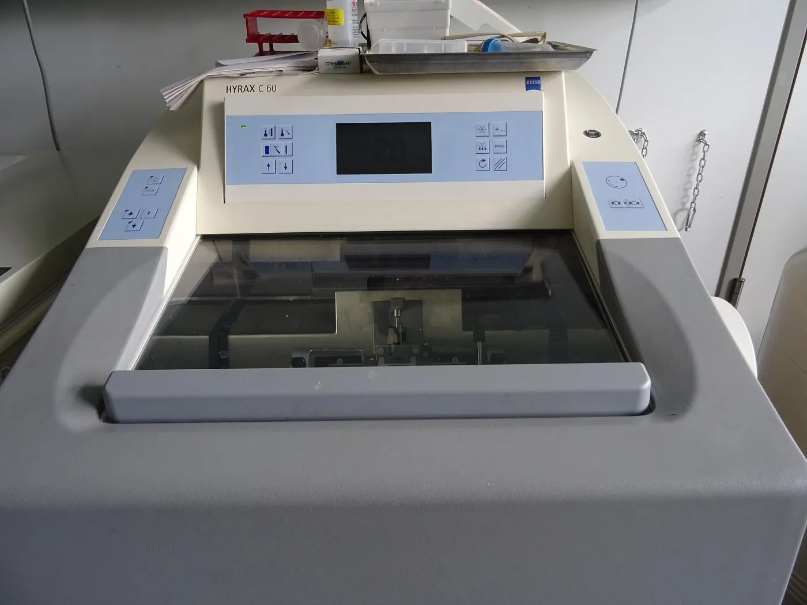


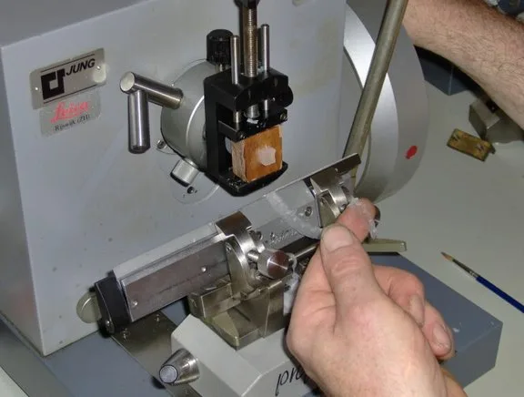

How thick is a section?
Thickness is a trade-off. Thicker sections keep more of each neuron's dendrites and axons together for 3D reconstruction, but they are harder for antibodies and light to get through, so thinner sections are easier to stain and image evenly.8,10
What goes wrong
- Freezing artifact. Ice crystals that grow during slow freezing push tissue aside and leave holes. To limit this, a fixed brain is usually soaked in a cryoprotectant, classically a sugar solution, before it is frozen.11,12
- Shrinkage. Processing can distort tissue. Too much time in alcohol shrinks it, and sections can shrink or be squeezed in thickness, strongly so in vibratome sections in one comparison. Cell counts and sizes measured on slides need to be checked and corrected.13,14,12
- Cutting marks. Chatter is a pattern of alternating thick and thin bands parallel to the blade, caused by vibration. A nick in the blade scores or tears the section. Thin sections that stretch unevenly end up with wrinkles and folds.12
2. Nissl stain: every cell body
The Nissl stain is named after Franz Nissl (1860–1919), a German psychiatrist and neuropathologist who developed it in 1884 while he was still a medical student.15 It uses basic dyes such as cresyl violet, thionin or toluidine blue. These dyes colour the cell nucleus and clumps in the neuron's cytoplasm called Nissl bodies. Electron microscopy later showed that Nissl bodies are stacks of rough endoplasmic reticulum studded with ribosomes, the cell's protein-making machinery. The staining of the Nissl bodies disappears if the RNA is first destroyed with an enzyme, which shows that Nissl bodies are rich in RNA.16,17

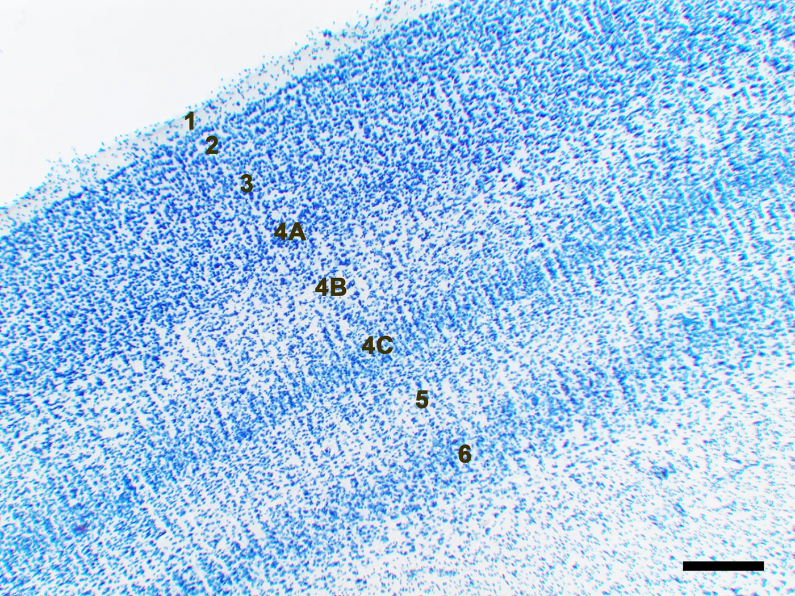
_cortex.jpg){kind=link}
What it shows
A Nissl stain labels all the cells in a section, not only neurons. Neurons show a stained nucleus with a rim of stained cytoplasm around it. Glial cells often show little more than their nucleus.16
Because it shows every cell body, it is the standard way to see the layers of the cerebral cortex and its cytoarchitecture: the pattern of cell sizes, shapes and packing density from place to place.18,16
What it cannot show
It does not fill a neuron's branches. Nissl substance is absent from axons, and at most the first stretch of the dendrites is visible. So the stain tells you where cell bodies are and how tightly they are packed, but very little about a neuron's full shape or its connections.15,19,20
Very small neurons can be hard to tell apart from glial cells.21
Brodmann's map
In 1909 Korbinian Brodmann published a map that divides the human cerebral cortex into more than 40 numbered areas (43 by one count, 48 by another, depending on the version of the map), based on what he saw in cell-body-stained sections. A century later, many neuroscientists still use his numbered areas to say where brain-imaging results are located.22,23
Modern mapping work argues that the cortex is more varied than his map suggests, so his areas are best treated as a starting point.24
3. Golgi stain: a few whole neurons
The Golgi stain, first called the "black reaction", was invented by the Italian physician Camillo Golgi in 1873. It was the first technique to show neurons whole, with all their branches.25,26 In principle the method is simple. The tissue is treated with a chromium salt and with a silver salt, and a dark deposit of silver chromate forms inside some cells and fills them, so they look black under the microscope.27,28

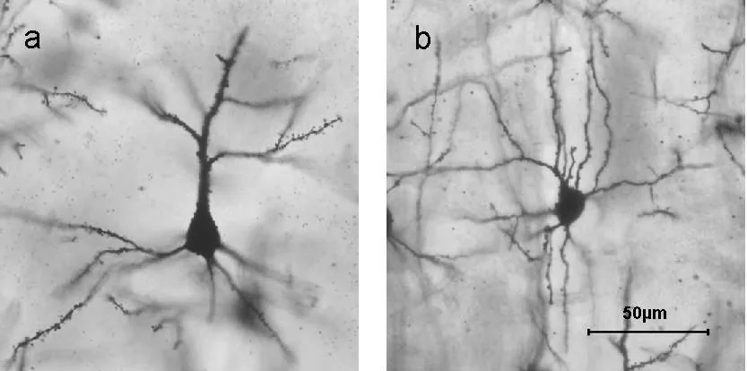


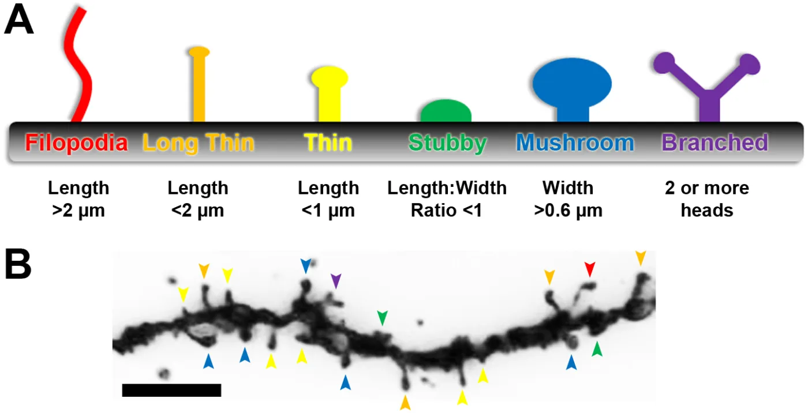

The stain fills only a tiny share of the neurons in a piece of tissue. One study used a mercury-based variant of the stain (Golgi-Cox) and counted neurons in one layer of mouse somatosensory cortex. It found that between about 0.7 and 2.3 percent of neurons were stained, and that the stained ones looked like a random sample of the neurons there. That is the method's strength. Each stained neuron stands out black against a pale background, so its whole dendritic tree and even its tiny dendritic spines can be seen.29,27,26 The Spines page models those spines.

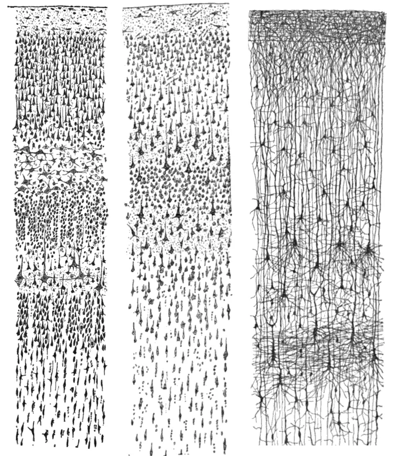

Cajal and the neuron theory
Santiago Ramón y Cajal was shown Golgi-stained brain tissue in 1887 and published his first study using the method in 1888. In that study he gave the first description of dendritic spines and proposed that axons, like dendrites, end freely. This supported the neuron theory: the idea that the nervous system is made of separate cells that communicate at points of contact.26
Golgi and Cajal shared the 1906 Nobel Prize in Physiology or Medicine for their work on the structure of the nervous system.30,26
Why only some cells?
Why the stain fills some neurons and skips their neighbours has puzzled researchers for decades. One time-lapse study saw the deposit begin at scattered seed points in the tissue and enter only those cells that had a part lying inside a seed point, which may explain part of the puzzle.31,28
Limits
You cannot choose which cells stain. The results are famously unreliable, and some tissue blocks do not stain at all. The share of neurons that stain is usually unknown, so the method cannot tell you how many neurons there are. Thick sections are needed to follow branches in three dimensions.32
The two stains answer different questions, and they can be combined on the same section: Nissl shows all the cell bodies and the layers, and Golgi shows the full shape of a few neurons.19,26
4. Antibody staining: one protein at a time
Antibodies are proteins made by the immune system. Each one sticks to a small patch, called an epitope, on a target molecule, the antigen. Immunohistochemistry uses that grip to show where a chosen protein sits in a thin slice of tissue.33,34 The idea dates to 1941, when Albert Coons and colleagues described an antibody carrying a fluorescent chemical group. In 1942 they used a fluorescent antibody to show a bacterial antigen inside animal tissue.35,36
The indirect method
An enzyme label
The label can be an enzyme. A common choice is horseradish peroxidase (HRP), which turns a chemical called DAB into a brown deposit that can be seen with an ordinary light microscope.38,39
A fluorescent label
The label can instead be a fluorophore, a molecule that gives off light of one colour when lit with another. Using a different colour for each antibody lets one section show several proteins at once. This is called immunofluorescence.37
Markers
Neuroscientists use marker proteins to tell cell types apart. NeuN labels the nuclei of most neurons, GFAP labels astrocytes, and Iba1 labels microglia.40,41,42 Parvalbumin, a calcium-binding protein, marks one group of interneurons in the cortex and hippocampus, although some other neurons contain it too.43
DAPI is often added to show every cell nucleus, usually in blue. DAPI is not an antibody. It is a dye that binds DNA directly.44

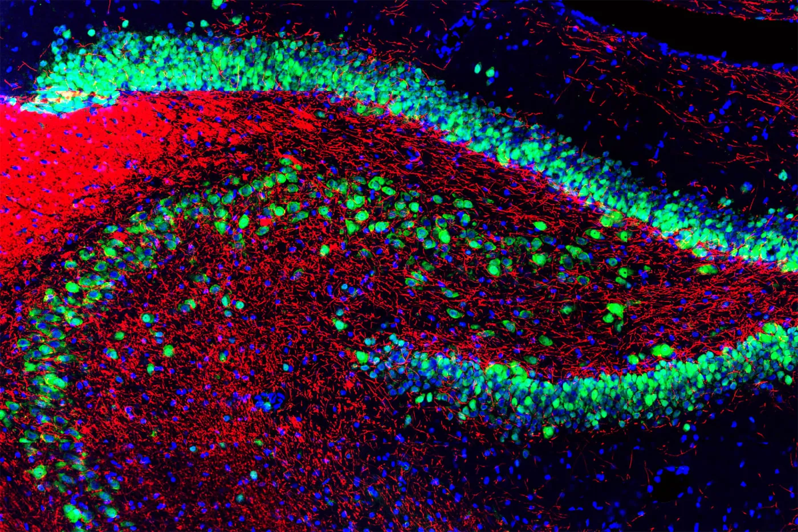
,_myelin_basic_protein_(red)_and_DNA_(blue).jpg){kind=link}

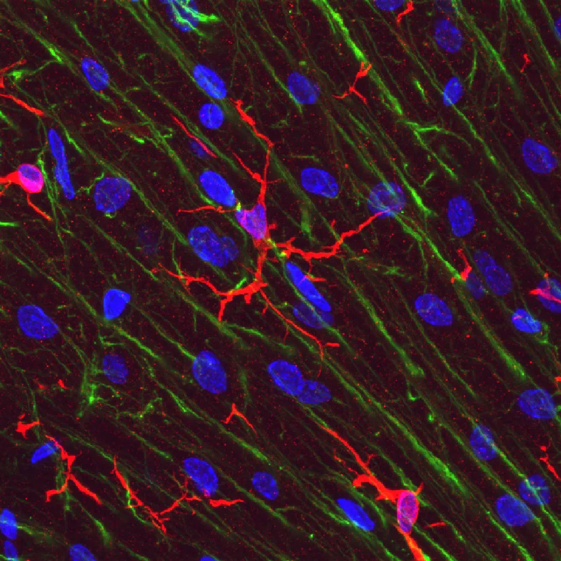
_in_rat_cerebellar_molecular_layer.jpg){kind=link}

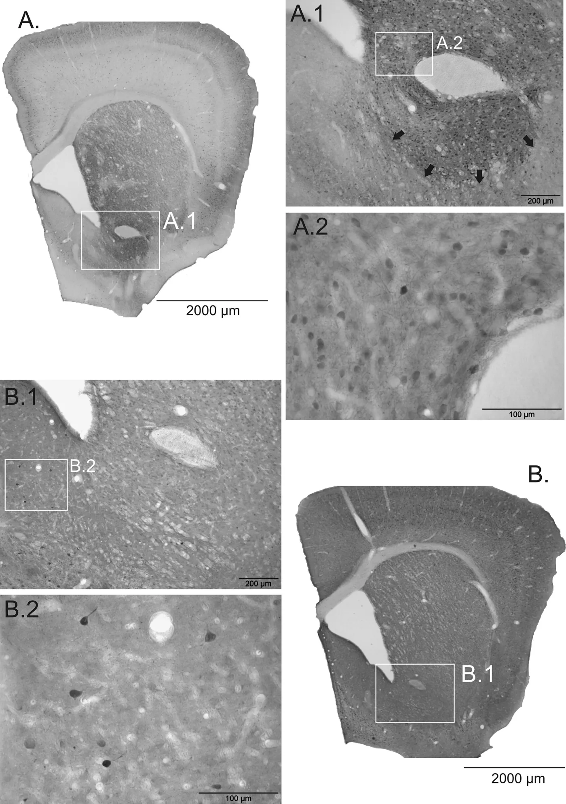

How it misleads
- The antibody. A stain is only as good as its antibody. Some antibodies also bind the wrong protein, and what is in the tube does not always match the label. Poorly checked antibodies have been named as one cause of results that other labs cannot repeat.45,46,47,48
- Controls. Good experiments include tissue known to contain the protein (a positive control) and tissue where no signal should appear (a negative control). The strongest test is tissue from an animal in which the gene for that protein has been deleted.33,48
- The tissue. Preparation can hide a real signal or add a false one. Fixing with formaldehyde can mask epitopes so the antibody no longer fits. Brain tissue also has its own background glow, called autofluorescence, for example from lipofuscin, a pigment that builds up with age.34,49,50
- Depth and time. Antibodies are large molecules, so getting them deep into thick tissue is hard. This is one reason tissue is usually cut into thin sections. The result is also a still picture of fixed tissue: it shows where a protein is, not what the cell was doing.37,51,52
- Activity markers. c-Fos is a protein that many neurons make after strong activation, so staining for it marks cells that were recently active. It is a record of the recent past, not a live recording, and some active neurons never make it.53,54
Two related tools
In situ hybridization uses a labelled nucleic acid probe to show where a particular RNA is, rather than the protein. Genetically encoded reporters such as green fluorescent protein (GFP) make the cell produce its own glowing label. In Brainbow mice, each neuron makes a random mix of several fluorescent proteins, so neighbouring neurons appear in different colours.55,56,57,58

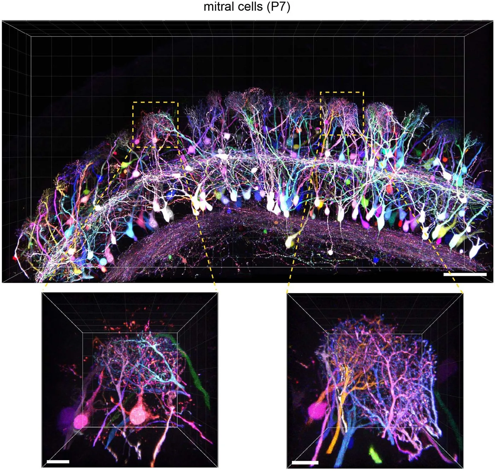
5. Mounting and imaging
Stained floating sections are guided onto a glass slide with a fine brush and flattened so there are no wrinkles or folds. They are left to dry onto the slide, then covered with mounting medium and a thin glass coverslip.8

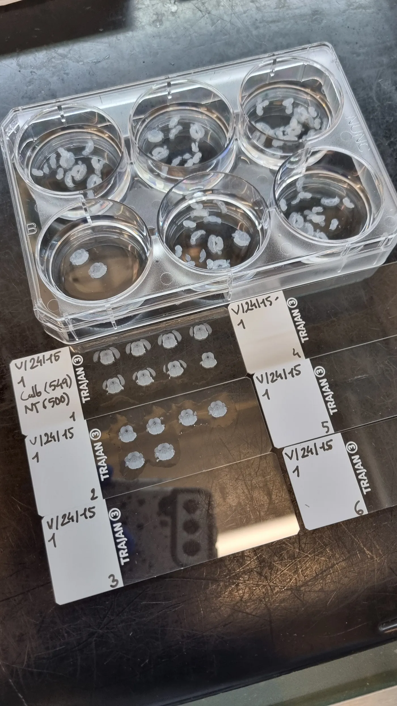

Widefield and confocal
A widefield fluorescence microscope lights up the whole thickness of the section at once, so out-of-focus glow blurs the picture. A confocal microscope scans the tissue point by point and uses a pinhole in front of the detector to reject out-of-focus light, giving a sharp "optical section".60,61
Deeper and bigger
Two-photon microscopy excites fluorescence only near the focus and can image cells several hundred micrometres deep in living tissue that scatters light. For whole brains, tissue clearing makes the fixed brain transparent, and a light-sheet microscope then images it one thin plane at a time.62,63,64,65,10
The limit of light
Ordinary light microscopes cannot separate two objects closer than roughly 200 to 350 nanometres, about half the wavelength of the light. But the gap between two neurons at a synapse is only about 20 nanometres, and synaptic vesicles are about 35 nanometres across. So the synaptic cleft was first seen directly with the electron microscope.66,67
Sources and image licences
Each image keeps its own licence, named under the picture. Images marked CC BY-SA may be reused only under the same licence. All were converted to WebP, and the larger ones were resized. Nothing else was changed. The text of this page is under the site's own licence.
- Thavarajah R, Mudimbaimannar VK, Elizabeth J, Rao UK, Ranganathan K (2012). Chemical and physical basics of routine formaldehyde fixation. Journal of Oral and Maxillofacial Pathology 16(3):400-405. doi.org/10.4103/0973-029X.102496
- Gage GJ, Kipke DR, Shain W (2012). Whole animal perfusion fixation for rodents. Journal of Visualized Experiments (65):e3564. doi.org/10.3791/3564
- McFadden WC, Walsh H, Richter F, Soudant C, Bryce CH, Hof PR, Fowkes M, Crary JF, McKenzie AT (2019). Perfusion fixation in brain banking: a systematic review. Acta Neuropathologica Communications 7(1):146. doi.org/10.1186/s40478-019-0799-y
- Mattei G, Cristiani I, Magliaro C, Ahluwalia A (2015). Profile analysis of hepatic porcine and murine brain tissue slices obtained with a vibratome. PeerJ 3:e932. doi.org/10.7717/peerj.932
- Edwards FA, Konnerth A, Sakmann B, Takahashi T (1989). A thin slice preparation for patch clamp recordings from neurones of the mammalian central nervous system. Pflügers Archiv European Journal of Physiology 414(5):600-612. doi.org/10.1007/BF00580998
- Ting JT, Daigle TL, Chen Q, Feng G (2014). Acute brain slice methods for adult and aging animals: application of targeted patch clamp analysis and optogenetics. Methods in Molecular Biology 1183:221-242. doi.org/10.1007/978-1-4939-1096-0_14
- Muniz Partida C, Walters E (2023). A novel immunohistochemical protocol for paraffin embedded tissue sections using free-floating techniques. Frontiers in Neuroanatomy 17:1154568. doi.org/10.3389/fnana.2023.1154568
- Potts EM, Coppotelli G, Ross JM (2020). Histological-based stainings using free-floating tissue sections. Journal of Visualized Experiments (162):e61622. doi.org/10.3791/61622
- Sy J, Ang LC (2019). Microtomy: Cutting Formalin-Fixed, Paraffin-Embedded Sections. Methods in Molecular Biology 1897:269-278. doi.org/10.1007/978-1-4939-8935-5_23
- Richardson DS, Lichtman JW (2015). Clarifying Tissue Clearing. Cell 162(2):246-257. doi.org/10.1016/j.cell.2015.06.067
- Rosene DL, Roy NJ, Davis BJ (1986). A cryoprotection method that facilitates cutting frozen sections of whole monkey brains for histological and histochemical processing without freezing artifact. Journal of Histochemistry & Cytochemistry 34(10):1301-1315. doi.org/10.1177/34.10.3745909
- Taqi SA, Sami SA, Sami LB, Zaki SA (2018). A review of artifacts in histopathology. Journal of Oral and Maxillofacial Pathology 22(2):279. doi.org/10.4103/jomfp.JOMFP_125_15
- Dorph-Petersen KA, Nyengaard JR, Gundersen HJG (2001). Tissue shrinkage and unbiased stereological estimation of particle number and size. Journal of Microscopy 204(3):232-246. doi.org/10.1046/j.1365-2818.2001.00958.x
- Gardella D, Hatton WJ, Rind HB, Rosen GD, von Bartheld CS (2003). Differential tissue shrinkage and compression in the z-axis: implications for optical disector counting in vibratome-, plastic- and cryosections. Journal of Neuroscience Methods 124(1):45-59. doi.org/10.1016/s0165-0270(02)00363-1
- Gomes MdM (2019). Franz Nissl (1860-1919), noted neuropsychiatrist and neuropathologist, staining the neuron, but not limiting it. Dementia & Neuropsychologia 13(3):352-355. doi.org/10.1590/1980-57642018dn13-030014
- Garcia-Cabezas MA, John YJ, Barbas H, Zikopoulos B (2016). Distinction of Neurons, Glia and Endothelial Cells in the Cerebral Cortex: An Algorithm Based on Cytological Features. Frontiers in Neuroanatomy 10:107. doi.org/10.3389/fnana.2016.00107
- Moon LDF (2018). Chromatolysis: Do injured axons regenerate poorly when ribonucleases attack rough endoplasmic reticulum, ribosomes and RNA?. Developmental Neurobiology 78(10):1011-1024. doi.org/10.1002/dneu.22625
- Magnain C, Augustinack JC, Reuter M, Wachinger C, Frosch MP, Ragan T, Akkin T, Wedeen VJ, Boas DA, Fischl B (2014). Blockface histology with optical coherence tomography: a comparison with Nissl staining. NeuroImage 84:524-533. doi.org/10.1016/j.neuroimage.2013.08.072
- Pilati N, Barker M, Panteleimonitis S, Donga R, Hamann M (2008). A Rapid Method Combining Golgi and Nissl Staining to Study Neuronal Morphology and Cytoarchitecture. Journal of Histochemistry & Cytochemistry 56(6):539-550. doi.org/10.1369/jhc.2008.950246
- DeFelipe J (2013). Cajal and the discovery of a new artistic world: the neuronal forest. Progress in Brain Research 203:201-220. doi.org/10.1016/B978-0-444-62730-8.00008-6
- Gittins R, Harrison PJ (2004). Neuronal density, size and shape in the human anterior cingulate cortex: a comparison of Nissl and NeuN staining. Brain Research Bulletin 63(2):155-160. doi.org/10.1016/j.brainresbull.2004.02.005
- Zilles K, Amunts K (2010). Centenary of Brodmann's map - conception and fate. Nature Reviews Neuroscience 11(2):139-145. doi.org/10.1038/nrn2776
- Zilles K (2018). Brodmann: a pioneer of human brain mapping - his impact on concepts of cortical organization. Brain 141(11):3262-3278. doi.org/10.1093/brain/awy273
- Amunts K, Zilles K (2015). Architectonic Mapping of the Human Brain beyond Brodmann. Neuron 88(6):1086-1107. doi.org/10.1016/j.neuron.2015.12.001
- Pannese E (1999). The Golgi Stain: invention, diffusion and impact on neurosciences. Journal of the History of the Neurosciences 8(2):132-140. doi.org/10.1076/jhin.8.2.132.1847
- DeFelipe J (2025). Cajal and the discovery of the Golgi method: a neuroanatomist's dream. Anatomical Science International 100(4):384-399. doi.org/10.1007/s12565-025-00840-7
- Vints K, Vandael D, Baatsen P, Pavie B, Vernaillen F, Corthout N, Rybakin V, Munck S, et al (2019). Modernization of Golgi staining techniques for high-resolution, 3-dimensional imaging of individual neurons. Scientific Reports 9:130. doi.org/10.1038/s41598-018-37377-x
- Spacek J (1989). Dynamics of the Golgi method: a time-lapse study of the early stages of impregnation in single sections. Journal of Neurocytology 18(1):27-38. doi.org/10.1007/bf01188421
- Pasternak JF, Woolsey TA (1975). On the "selectivity" of the Golgi-Cox method. Journal of Comparative Neurology 160(3):307-312. doi.org/10.1002/cne.901600304
- DeFelipe J (2006). Brain plasticity and mental processes: Cajal again. Nature Reviews Neuroscience 7(10):811-817. doi.org/10.1038/nrn2005
- Stefanovic BD, Ristanovic D, Trpinac D, Dordevic-Camba V, Lackovic V, Bumbasirevic V, Obradovic M, Basic R, Cetkovic M (1998). The acidophilic nature of neuronal Golgi impregnation. Acta Histochemica 100(2):217-227. doi.org/10.1016/S0065-1281(98)80029-9
- Rosoklija GB, Petrushevski VM, Stankov A, Dika A, Jakovski Z, Pavlovski G, Davcheva N, Lipkin R, et al., Dwork AJ (2014). Reliable and durable Golgi staining of brain tissue from human autopsies and experimental animals. Journal of Neuroscience Methods 230:20-29. doi.org/10.1016/j.jneumeth.2014.04.006
- Hewitt SM, Baskin DG, Frevert CW, Stahl WL, Rosa-Molinar E (2014). Controls for immunohistochemistry: the Histochemical Society's standards of practice for validation of immunohistochemical assays. Journal of Histochemistry & Cytochemistry 62(10):693-697. doi.org/10.1369/0022155414545224
- Ramos-Vara JA (2005). Technical aspects of immunohistochemistry. Veterinary Pathology 42(4):405-426. doi.org/10.1354/vp.42-4-405
- Coons AH, Creech HJ, Jones RN (1941). Immunological Properties of an Antibody Containing a Fluorescent Group. Proceedings of the Society for Experimental Biology and Medicine 47(2):200-202. doi.org/10.3181/00379727-47-13084P
- Coons AH, Creech HJ, Jones RN, Berliner E (1942). The Demonstration of Pneumococcal Antigen in Tissues by the Use of Fluorescent Antibody. The Journal of Immunology 45(3):159-170. doi.org/10.4049/jimmunol.45.3.159
- Im K, Mareninov S, Diaz MFP, Yong WH (2019). An Introduction to Performing Immunofluorescence Staining. Methods in Molecular Biology 1897:299-311. doi.org/10.1007/978-1-4939-8935-5_26
- Hsu SM, Soban E (1982). Color modification of diaminobenzidine (DAB) precipitation by metallic ions and its application for double immunohistochemistry. Journal of Histochemistry & Cytochemistry 30(10):1079-1082. doi.org/10.1177/30.10.6182185
- Hsu SM, Raine L, Fanger H (1981). Use of avidin-biotin-peroxidase complex (ABC) in immunoperoxidase techniques: a comparison between ABC and unlabeled antibody (PAP) procedures. Journal of Histochemistry & Cytochemistry 29(4):577-580. doi.org/10.1177/29.4.6166661
- Mullen RJ, Buck CR, Smith AM (1992). NeuN, a neuronal specific nuclear protein in vertebrates. Development 116(1):201-211. doi.org/10.1242/dev.116.1.201
- Bignami A, Eng LF, Dahl D, Uyeda CT (1972). Localization of the glial fibrillary acidic protein in astrocytes by immunofluorescence. Brain Research 43(2):429-435. doi.org/10.1016/0006-8993(72)90398-8
- Ito D, Imai Y, Ohsawa K, Nakajima K, Fukuuchi Y, Kohsaka S (1998). Microglia-specific localisation of a novel calcium binding protein, Iba1. Molecular Brain Research 57(1):1-9. doi.org/10.1016/s0169-328x(98)00040-0
- Celio MR (1990). Calbindin D-28k and parvalbumin in the rat nervous system. Neuroscience 35(2):375-475. doi.org/10.1016/0306-4522(90)90091-h
- Kapuscinski J (1995). DAPI: a DNA-specific fluorescent probe. Biotechnic & Histochemistry 70(5):220-233. doi.org/10.3109/10520299509108199
- Bordeaux J, Welsh A, Agarwal S, Killiam E, Baquero M, Hanna J, Anagnostou V, Rimm D (2010). Antibody validation. BioTechniques 48(3):197-209. doi.org/10.2144/000113382
- Baker M (2015). Reproducibility crisis: Blame it on the antibodies. Nature 521(7552):274-276. doi.org/10.1038/521274a
- Uhlen M, Bandrowski A, Carr S, Edwards A, Ellenberg J, Lundberg E, Rimm DL, Rodriguez H, Hiltke T, Snyder M, Yamamoto T (2016). A proposal for validation of antibodies. Nature Methods 13(10):823-827. doi.org/10.1038/nmeth.3995
- Rhodes KJ, Trimmer JS (2006). Antibodies as valuable neuroscience research tools versus reagents of mass distraction. The Journal of Neuroscience 26(31):8017-8020. doi.org/10.1523/JNEUROSCI.2728-06.2006
- Shi SR, Key ME, Kalra KL (1991). Antigen retrieval in formalin-fixed, paraffin-embedded tissues: an enhancement method for immunohistochemical staining based on microwave oven heating of tissue sections. Journal of Histochemistry & Cytochemistry 39(6):741-748. doi.org/10.1177/39.6.1709656
- Schnell SA, Staines WA, Wessendorf MW (1999). Reduction of lipofuscin-like autofluorescence in fluorescently labeled tissue. Journal of Histochemistry & Cytochemistry 47(6):719-730. doi.org/10.1177/002215549904700601
- Lai HM, Tang Y, Lau ZYH, et al (2022). Antibody stabilization for thermally accelerated deep immunostaining. Nature Methods 19(9):1137-1146. doi.org/10.1038/s41592-022-01569-1
- Renier N, Wu Z, Simon DJ, Yang J, Ariel P, Tessier-Lavigne M (2014). iDISCO: a simple, rapid method to immunolabel large tissue samples for volume imaging. Cell 159(4):896-910. doi.org/10.1016/j.cell.2014.10.010
- Sagar SM, Sharp FR, Curran T (1988). Expression of c-fos protein in brain: metabolic mapping at the cellular level. Science 240(4857):1328-1331. doi.org/10.1126/science.3131879
- Kovács KJ (2008). Measurement of immediate-early gene activation - c-fos and beyond. Journal of Neuroendocrinology 20(6):665-672. doi.org/10.1111/j.1365-2826.2008.01734.x
- Gall JG, Pardue ML (1969). Formation and detection of RNA-DNA hybrid molecules in cytological preparations. Proceedings of the National Academy of Sciences 63(2):378-383. doi.org/10.1073/pnas.63.2.378
- Wang F, Flanagan J, Su N, Wang LC, Bui S, Nielson A, Wu X, Vo HT, Ma XJ, Luo Y (2012). RNAscope: a novel in situ RNA analysis platform for formalin-fixed, paraffin-embedded tissues. The Journal of Molecular Diagnostics 14(1):22-29. doi.org/10.1016/j.jmoldx.2011.08.002
- Chalfie M, Tu Y, Euskirchen G, Ward WW, Prasher DC (1994). Green fluorescent protein as a marker for gene expression. Science 263(5148):802-805. doi.org/10.1126/science.8303295
- Livet J, Weissman TA, Kang H, Draft RW, Lu J, Bennis RA, Sanes JR, Lichtman JW (2007). Transgenic strategies for combinatorial expression of fluorescent proteins in the nervous system. Nature 450(7166):56-62. doi.org/10.1038/nature06293
- Sakaguchi R, Leiwe MN, Imai T (2018). Bright multicolor labeling of neuronal circuits with fluorescent proteins and chemical tags. eLife 7:e40350. doi.org/10.7554/eLife.40350
- Conchello JA, Lichtman JW (2005). Optical sectioning microscopy. Nature Methods 2(12):920-931. doi.org/10.1038/nmeth815
- Minsky M (1988). Memoir on inventing the confocal scanning microscope. Scanning 10(4):128-138. doi.org/10.1002/sca.4950100403
- Denk W, Strickler JH, Webb WW (1990). Two-photon laser scanning fluorescence microscopy. Science 248(4951):73-76. doi.org/10.1126/science.2321027
- Helmchen F, Denk W (2005). Deep tissue two-photon microscopy. Nature Methods 2(12):932-940. doi.org/10.1038/nmeth818
- Chung K, Wallace J, Kim SY, Kalyanasundaram S, Andalman AS, Davidson TJ, Mirzabekov JJ, Zalocusky KA, Mattis J, Denisin AK, Pak S, Bernstein H, Ramakrishnan C, Grosenick L, Gradinaru V, Deisseroth K (2013). Structural and molecular interrogation of intact biological systems. Nature 497(7449):332-337. doi.org/10.1038/nature12107
- Dodt HU, Leischner U, Schierloh A, Jährling N, Mauch CP, Deininger K, Deussing JM, Eder M, Zieglgänsberger W, Becker K (2007). Ultramicroscopy: three-dimensional visualization of neuronal networks in the whole mouse brain. Nature Methods 4(4):331-336. doi.org/10.1038/nmeth1036
- Schermelleh L, Heintzmann R, Leonhardt H (2010). A guide to super-resolution fluorescence microscopy. Journal of Cell Biology 190(2):165-175. doi.org/10.1083/jcb.201002018
- Harris KM, Weinberg RJ (2012). Ultrastructure of synapses in the mammalian brain. Cold Spring Harbor Perspectives in Biology 4(5):a005587. doi.org/10.1101/cshperspect.a005587